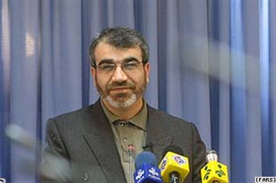

پذيرش > سایت نوشته ها > کانديداتوری زنان برای رياست جمهوری منع قانونی ندارد
 کدخدايی: کدخدايی:

 کانديداتوری زنان برای رياست جمهوری منع قانونی ندارد کانديداتوری زنان برای رياست جمهوری منع قانونی ندارد
23 فروردین 1388 - رادیو فردا - نسخه قابل چاپ
عباسعلی کدخدايی، سخنگوی شورای نگهبان، روز شنبه گفت که کانديدا شدن زنان در انتخابات رياست جمهوری ايران منعی ندارد.
سخنگوی شورای نگهبان در پاسخ به پرسشی درباره تغيير موضع اين شورا درقبال کانديداتوری زنان با توجه به اعلام دواطلبی دو زن در انتخابات رياست جمهوری، گفت:« شورای نگهبان هيچ گاه رجل سياسی را تفسير نکرده و هر چه تا کنون مطرح شده صرفا از سوی نشريات و نهادهای حقوقی بوده است.»
طبق اصل ۱۱۵ قانون اساسی جمهوری اسلامی ايران فردی که نامزد رياست جمهوری می شود، بايد از «رجال مذهبی و سياسی» کشور باشد. درخصوص اين که آيا واژه رجال شامل زنان هم می شود يا نه، اختلاف نظر وجود دارد.
مقامات جمهوری اسلامی ايران تاکنون اظهارنظرهای متفاوتی در تفسير واژه رجال داشته اند.
این در حالی است که شورای نگهبان قانون اساسی که به عنوان مرجع تشخيص افراد واجد شرايط برای نامزدی در انتخابات رياست جمهوری در ایران شناخته می شود، تاکنون در این باره به طور رسمی هیچ اظهار نظری نکرده است.
در همين زمينه عباسعلی کدخدايی روز شنبه گفت: «شورای نگهبان هيچ گاه به صرف اينکه فردی که ثبت نام کرده مرد است يا زن اظهار نظر نکرده است و هر گاه زنی رد صلاحيت شده به خاطر نداشتن صلاحيت عمومی بوده است و شورای نگهبان هيچ گاه واژه رجل سياسی را در قانون اساسی تفسير نکرده است» .
وی افزود:« رويه شورای نگهبان مثل سابق است ، در گذشته هم از قشر بانوان کسانی بودند که ثبت نام کردند و شورای نگهبان در اين زمينه نظر خاصی ندارد و منع خاصی هم وجود ندارد، قانون خاصی هم نسبت به ثبت نام و بررسی صلاحيت بانوان وجود ندارد.»
اين در حالی است که به گزارش خبرگزاری مهر، غلامحسين الهام، سخنگوی پيشين شورای نگهبان و عضو فعلی اين شورا، در جريان انتخابات نهمين دوره انتخابات رياست جمهوری در خصوص تعريف «رجل سياسی» گفته بود: «نـص قانون اساسی، مرد بودن نامزدهای انتخابات رياست جمهوری است و علاوه بر آن، بايد رجل سياسی باشد.»
در نهمين انتخابات رياست جمهوری ايران که در ۲۷ خرداد ماه سال ۱۳۸۴ برگزارشد، ۹۳ زن دواطلب حضور در اين انتخابات بودند که از سوی شورای نگهبان رد صلاحيت شدند.
شورای نگهبان مشخص نکرده بود که رد صلاحيت اين افراد به دليل زن بودن اين افراد بوده است يا نه.
در آستانه نهمين دوره انتخابات رياست جمهوری در ۱۲ خردادماه سال ۱۳۸۴ به دعوت اعضم طالقانی، از شخصيت های ملی -مذهبی و رييس جامعه اسلامی زنان، تجمعی در اعتراض به این رد صلاحیت ها در مقابل رياست جمهوری برگزار شد.
در اين تجمع اعتراضی زنان خواستار لغو قوانين «زن ستيز» شده بودند.
در بخشی از بيانيه اين تجمع آمده بود:« بر اساس اعلاميه جهانی حقوق بشر و ميثاق بين المللی حقوق مدنی و سياسی که جمهوری اسلامی ايران نيز ملزم به اجرای آن است، هيچکس را نمی توان صرفاً به دليل جنسيت از هيچيک از حقوق مدنی و سياسی محروم کرد، از منظر شرعی هم موازين فقهی اساساً مرد بودن را برای مقام رياست جمهوری که نوعی وکالت به شمار می رود لازم ندانسته است».
کمیته صیانت از آرا
آقای کدخدایی همچنین در نخستین نشست خبری خود در سال جديد گفت: تشکيل کميته صيانت از آراء خلاف قانون است
عباسعلی کدخدايی افزود: تشکيل هر نهاد جديد بايد از تصويب قانون بگذرد و گرنه خلاف قانون خواهد بود.
وی با این حال گفت: داوطلبان رياست جمهوری می توانند در حوزه های اخذ رای نمايندگانی را تعيين کنند.
پيشتر، عليرضا بهشتی، عضو شورای راهبردی ستاد ميرحسين موسوی، نخست وزير سابق و از کانديداهای رياست جمهوری ، از جمله کسانی است که بر ضرورت تشکيل کميته صيانت از آرا تاکيد کرده بود.
علیرضا بهشتی روز شنبه در واکنش به اظهارات آقای کدخدایی گفت:« تشکيل کميته صيانت از آرا و اخلاق انتخاباتی نه تنها برخلاف قانون نيست بلکه در حمايت از قانون است».
پیشتر برخی از شخصیت های اصلاح طلب نسبت به سلامت انتخابات ابراز نگرانی کرده بودند و به همین دلیل از تشکیل چنین کمیته ای حمایت کرده بودند.
آقای کدخدایی در دفاع از عملکرد شورای نگهبان در این باره گفت:«هر نهاد جديدی که بخواهد شکل بگيرد نياز به تصويب قانون دارد. تشکيل و ايجاد اين کميتهها خلاف قانون است و شورای نگهبان در طول ۳۰ سال اخير نشان داده که بیطرف بوده و همه اسناد و مدارک نشاندهنده اين موضوع است. در اين رابطه شکايات افراد، مورد بررسی قرار گرفته و رسيدگی شده است و به نظر ما هيچ نيازی برای ابراز نگرانی در اينگونه موارد وجود ندارد و شورای نگهبان با رعايت بیطرفی وظايف خود را انجام میدهد.»
این در حالی است که گروههای اصلاح طلب نسبت به عمکلرد شورای نگهبان معترض هستند و این شورا را بی طرف نمی دانند.
مهدی کروبی، نامزد انتخابات ریاست جمهوری، هفته گذشته در نامهای به اعضای شورای نگهبان ضمن انتقاد از رفتارهای «ناقض جايگاه قانونی اين نهاد» تهديد کرد که با «تخلف و بیطرفی نهادهای اجرايی و نظارتی برخورد علنی» خواهد کرد.
رادیوفردا
ارسال به
بالاترین
،
توییتر
،
فریندفید
،
فیسبوک
در همين بخش :
 یک خبر تلخ؟ یک قانونشکنی؟ یک تصمیم بخشنامهای جدید؟ یک خبر تلخ؟ یک قانونشکنی؟ یک تصمیم بخشنامهای جدید؟
چرا بایست به سکسوالیته پرداخت؟ / نفیسه آزاد
آزارجنسی خانگی؛ «قربانی» نه، «نجات یافته»
زنان، بزرگترین بازندگان بهار عرب
سانسور از دیدگاه جنسیتی/الهه امانی
ديگر بخش ها :
طرح یک میلیون امضا
|
مقالات
|
سایت نوشته ها
|
اخبار
|
گزارش كمپين
|
گفت و گو
|
علیه سکوت
|
كوچه به كوچه
|
نامه های شما
|
گزارش ویژه
|
گفتگو با اعضا
|
ویژه سالگرد کمپین
|
تصویر برابری
|
دل آرام علی
|
تریبون
|
مقالات
|
تاریخ شفاهی
|
خارج از چارچوب
|
کتابخانه
|
درباره کمپین
|
کمپین در شهرها
|
کمپین در بند
|
صدای تغییر
|
ویژه 22 خرداد
|
لایحه حمایت از خانواده
|
گالری
|
عشا مومنی
|
امیر یعقوبعلی
|
خدیجه مقدم
|
راحله عسگری زاده و نسیم خسروی
|
پروین اردلان،جلوه جواهری، مریم حسین خواه، ناهید کشاورز
|
زینب پیغمبرزاده
|
سعیده امین، سارا ایمانیان، محبوبه حسین زاده، ناهید کشاورز و همایون نامی
|
احترام شادفر
|
نسیم سرابندی زاده،فاطمه دهدشتی
|
وبلاگ مهمان
|
پرونده خرم آباد
|
دستگیری ها
|
مریم مالک
|
پرستو اللهیاری
|
مهرنوش اعتمادی
|
سمیه رشیدی
|
Other Languages
|
همراهان
|
«فراخوان کمپین ده روز با بهاره هدایت»
| English
|